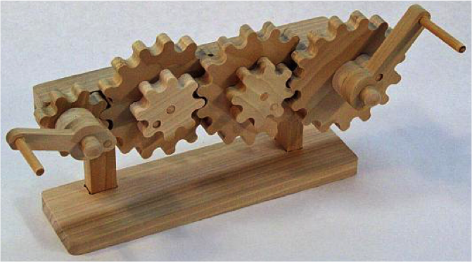
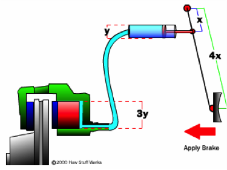
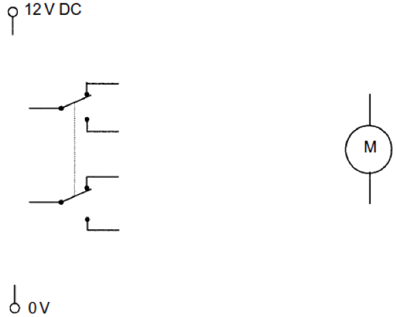
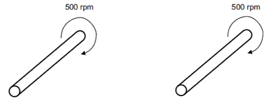
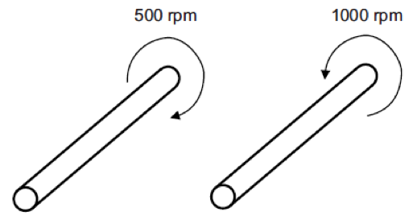
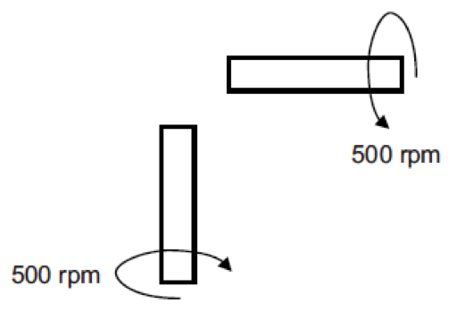
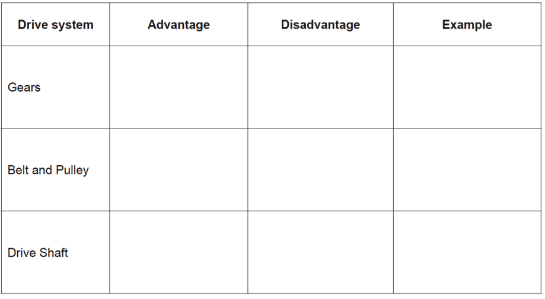

Drive Systems
Table of Contents
1 Introduction
- With an understanding of the types of motion, we can start to look at different ways of using them to achieve different outcomes. All tools and machines are made up of mechanisms; a complicated machine is lots of mechanisms working together. Mechanisms are used to improve our own abilities, e.g. we can hit a nail harder with a hammer (a lever mechanism) than we can by hitting it with a stone held in the hand and we can move faster on a bicycle than by running.
- All mechanisms are to do with movement and energy. Every mechanism can be split into three parts:
- Input – the energy put in, e.g. the squeezing together of the handles of a pair of scissors.
- Process – the movement of the mechanism, e.g. the movement of the scissors blades.
- Output - the result of the process, e.g. cutting paper.
- Many mechanisms change one type of movement to another.
2 Drive Systems
Gears
- Gears (found in food mixers, cars, bicycles, etc) incorporate teeth in their design. Because of this, they have the advantage of not slipping, but are expensive to manufacture and can be noisy.

- Gears are used for a multitude of different applications. They can be seen in cars, microwave ovens, lifts, automated doors, children’s toys, desktop fans and many other places. There are several different types of gear terminology you will need to know about for the exam. In the picture above, the gear on the left (if it were connected to a motor) would be referred to as the driver gear. The one on the far right would be the driven gear, and the ones in the middle are referred to as idler gears. The main definitions you need to know are:
- Gear: A toothed wheel of varying diameter.
- Simple gear train: Two gears meshed together.
- Compound gear train: More than two gears meshed together.
- Gear ratio: The ratio between a driver gear and its driven gear.
- Idler gear: A gear inserted between two or more other gear wheels.
Other Gear Configurations
- Worm drive: A worm drive (image shown to the right) is a non-slip gearing system for transmitting higher torque at lower speeds.
- Rack and Pinion gear: Used to convert rotary motion to linear motion, as seen in steering systems on cars, and mountain railways.
- Bevel gear: Gears which allow transmission of drive through 90º.
Systems will often require that motion to be transferred from one place to another; this can be achieved with linkages (which are discussed below) or by using either belts or chains.
Tip: You may find this site helpful, as well as pages 66 and 69 of the textbook.
Belts and Pulleys
- Belts and pulleys are one of the oldest ways to transmit drive, and can be seen on Victorian steam engines, car engines and tools such as lathes and drills. While they are excellent for covering distances between pulleys, they are susceptible to slipping in wet conditions, and the belts can stretch (and break) over time.
- Chains and sprockets are a non-slip alternative.
Tribology (Friction)
- Friction is a force resisting motion, which generates heat. In engineering, friction can either be advantageous or disadvantageous, depending upon the situation.
- In a car’s brakes, friction is used to stop a car, by pads being pushed tightly against the inside of the wheel to generate friction and prevent the wheels from turning (by transferring kinetic energy into heat).

- In a car engine, or its gearbox, friction between two metal gears as they rub together causes the parts to wear, unwanted heat to be generated and reduces the efficiency of the engine – this friction can be reduced by using a lubricant (such as engine oil). In electronics, nylon gears are both tough and self-lubricating, and so are an ideal choice for small projects.
Mechanical Advantage
- When a mechanism such as a lever improves the effect of an effort, the mechanism is said to have provided a Mechanical Advantage (MA). To work out what this is, the following formula can be used: MA = LOAD ÷ EFFORT
Task: One example of a mechanical system are levers. Identify the three different classes of levers, create a diagram for each (indicating the location of the load, effort and fulcrum), and give an example of where each can be seen in real life.
Tip: You may find this page of some use, as well as pages 64-65 of the text book.
3 Recap
Past Paper Questions
June 2007, Q1(f) A Double Pole Double Throw (DPDT) switch can be used to control the forward and reverse direction of a motor. Complete the diagram below to show a reversing circuit. Marks will be awarded for: Power supply connected to switch. (2 marks) Switch connected to the motor. (4 marks) 
June 2010, Q6.(b) A system is to be developed to automatically open and close a set of curtains at regular time intervals. The curtains weigh 10 kg and the motor is connected directly to them with a belt. The motor rotates too fast and cannot move the curtains. Identify two problems with the drive system and suggest two possible modifications that could be made so that the existing motor can be used. Problem 1: Modification 1: Problem 2: Modification 2: (4 marks)
6(c)(i) Discuss the impact on the environment of using electrically powered curtains. (3 marks) (c) (ii) Suggest two environmentally friendly sources of mains electricity. (2 marks) 6 (c) (iii) Give three advantages of environmentally friendly energy sources. (3 marks)
June 2011, Q3. You should spend about 20 minutes on this question. This question is about drive systems.
3(a) On each of the following diagrams, sketch and label suitable drive systems to connect the shafts. Make sure that the shafts rotate in the correct direction and at the correct speed. In each case name the drive system used.
3 (a)(i) Two shafts rotating in close proximity, in opposite directions, at the same speed. (3 marks)
 (a)(ii) Name the drive system used. (1 mark)
(a)(ii) Name the drive system used. (1 mark)
(a)(iii) Two shafts rotating a distance apart, in the same direction, at the same speed (3 marks)  3(a)(iv) Name the drive system used. (1 mark)
(a)(v) Two shafts rotating in close proximity, in opposite directions, at different speeds (3 marks)  (a)(vi) Name the drive system used. (1 mark)
(a)(vii) Two shafts rotating at 90° to each other, in opposite directions, at the same speed. Note: The shafts are drawn in 2D to simplify your sketch. (3 marks)  3(a)(viii) Name the drive system used. (1 mark)
(b) Friction can be an advantage or a disadvantage.
3(b)(i) Give an example and explain why friction can be an advantage in a drive system. (2 marks)
3(b)(ii) Give an example and explain why friction can be a disadvantage in a drive system. (2 marks)
June 2013, Q2. You are advised to spend about 20 minutes on this question. This question is about mechanical drive systems.
2(a) Complete the following table.  Give an advantage and disadvantage of each type of drive system with an example of a product that uses the drive system. (9 marks)
2(b) Friction can be an advantage or a disadvantage. Describe a system where friction is an advantage. Describe a system where friction is a disadvantage. (2x2 marks)
2(c) Calculate the gear ratio of the gears below.
 Formula:
Formula:
Calculation:
Answer:
(3 marks)
2(d) Calculate the velocity ratio of the pulleys below.
 Formula:
Formula:
Calculation:
Answer:
(3 marks)
2(e) Calculate the output speed of the pulley system above if the input speed is 1000 rpm.
Formula:
Calculation:
Answer:
(3 marks)